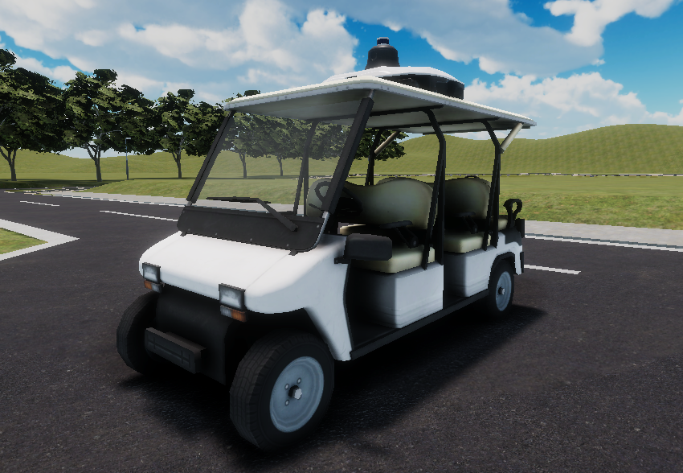
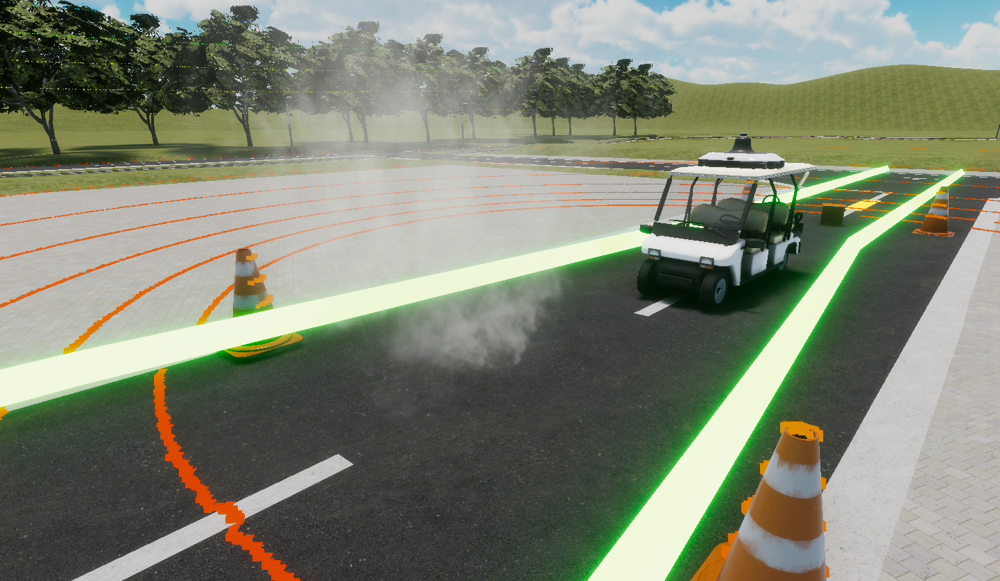

Rule
Participants will drive an automated vehicle using the automated driving software they have developed, and compete in terms of distance points calculated from the results.
For details of the competition and course specifications, please refer to the following.
Detail of Rule
Ranking System
- Rankings are determined by distance points.
Distance points: min(overall distance from the starting point (m), distance of the entire course) * (1.0 - assignment 1 penalty - assignment 2 penalty - assignment 3 penalty). - If the distance points are the same, the Competitor with the shortest running time in the Task 3 area will be placed higher (if he/she runs to the end of the task).
Limitation
- Travel speed is 0~5km/h
- If the speed limit is exceeded by more than 2km/h, the competitor will be disqualified = 0 points.
- Time limit is 5 minutes (to accommodate the case where the vehicle stops in the middle of the route).
- Time from when the vehicle starts is measured.
- The placement of the vehicles may be somewhat random.
- Need to add a handling of collision after reaching the goal.
Vehicle
The vehicle to be used is the golf cart shown here. 
Course
You will be challenged with 3 tasks in this course.

Task 1 : Obstacle detection stop (cardboard)
Clear condition:
・Obstacle detection stop (cardboard)
・The vehicle head must stop at a position between 3m and 6m from the obstacle.
Penalty:
・the vehicle head must be between 3m and 6m from the obstacle.
・If the vehicle fails to stop, 5% points will be deducted from the distance points.

Task 2: Driving in the presence of smoke
Clear condition:
・Do not stop within the section of Task 2.
Penalty:
・Do not stop within the section of Task 2.
・If you stop, 5% points will be deducted from the distance points.

Task 3-1: Narrow road driving (slalom)
Clear condition:
・Do not collide with a cardboard box.
・Do not stray from the designated route.
Penalty:
・If the vehicle collides with a cardboard box or strays from the designated path, the driving will be terminated.
Task 3-2: Narrow road driving (L-shaped crank)
Clear condition:
・Do not collide with a cardboard box.
・Do not stray from the designated route.
・Stop after completing the race.
Penalty:
・If you collide with a cardboard box or run out of the designated path, the race will be terminated.
・Collision or going out of the path after finishing the race, 5% point deduction will be given.

How to check results
When the run is completed, result.json will be output based on /aichallenge/score topic and /aichallenge/collision topic. See below to check the results.
{
"rawDistanceScore": float32, // distance points without penalty
"distanceScore": float32, // distance points reflected in the ranking
"task3Duration": float32, // time spent on task 3
"isOutsideLane": bool, // lane outside lane
"isTimeout": bool, // timeout
"hasCollided": bool, // collision
"hasExceededSpeedLimit": bool, // speed limit exceeded
"hasFinishedTask1": bool, // has Task 1 been completed successfully
"hasFinishedTask2": bool, // has Task 2 been completed successfully
"hasFinishedTask3": bool // has Task 3 been completed successfully?
}